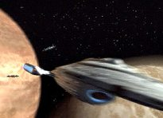
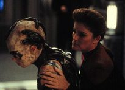
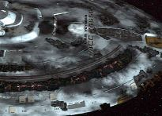
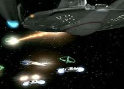
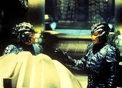
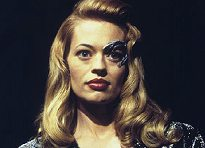

|

Clique aqui
para visitar o
Acervo de colunas


|
O melhor de Voyager ainda está por vir?
A primeira temporada foi curta demais, tendo contado com apenas 16 episódios, a maior parte deles ingnuos e superficiais - embora agradassem esteticamente. Na segunda, isso j no era suficiente, o que se refletiu na queda dos números da audiência. J na virada do segundo para a terceiro ano, a série deu uma grande guinada em termos de valores de produção e propósito de ser. Mas a que vieram essas mudanas?  Antes que eu perca algum leitor, deixe-me dizer tratarei aqui apenas dos pontos altos da temporada inédita, entre eles, o longo arco de histórias envolvendo os Hirogen. O quarto ano comea com a resoluo do excelente e igualmente controverso "Scorpion". Fazendo jus maldio das continuaes, no entanto, "Scorpion, Part II" incapaz de alcanar o xito de sua primeira parte. Obviamente o seu ponto alto a introduo de Jeri Ryan como Seven of Nine no elenco fixo da série. Na história, a tripulao, aliada aos Borgs, se prepara para enfrentar a misteriosa Espcie 8472, mas os conflitos entre a individualidade humana e a coletividade Borg mostram-se mais ameaadores do que os inimigos em si. Fao aqui um parntese para avisar aos mais ansiosos que Seven está to bela neste segmento como qualquer outro drone Borg estaria. Ela s se livrar dos implantes cibernticos no episódio seguinte.   Se os Kazons foram o sustentculo da série durante as primeiras temporadas, nesta o destaque vai para os Hirogen, uma raa de caadores nmades, cujo único propósito perseguir suas vtimas e adornar o anteparo das naves com os restos mortais delas. grande o nmero de episódios envolvendo a raa e, surpreendentemente, todos eles so bons.  Em "Hunters", chegam as primeiras cartas de casa. Chakotay e B'Elanna descobrem que a rebelio Maquis foi definitivamente suprimida pelos Cardassianos, que tiveram apoio dos Dominion, e Janeway fica sabendo que seu noivo Mark (visto em Caretaker) está casado e feliz. O fato de a tripulao usar a rede de estaes de comunicao irrita os Hirogen, que mostram pela primeira vez a sua belicosidade. Suas naves entram em combate com a Voyager e, no final, a estao destruda, o que interrompe o elo com a à Terra. A guerra entre Hirogens e a Voyager então declarada. "Prey" no segue na mesma linha dos dois episódios anteriores, embora também apresente os Hirogens. Neste segmento, Janeway resgata um caador ferido esperando que este ato ponha fim s hostilidades entre as raas, mas tudo se complica quando um ser da Espcie 8472 invade a Voyager. O episódio traz dilogos interessantes entre Janeway e Seven. As duas se confrontam o tempo todo e isso que torna a temporada to especial. At então, os fs esperavam pelo conflito entre Maquis e oficiais da Frota, mas isso nunca realmente aconteceu. O clima a bordo da Voyager sempre foi ameno. Com a chegada de Seven, tudo muda.  Os outros viles de destaque so, naturalmente, os Borgs. Mas a coletividade no d o ar da graa diretamente. O universo Borg explorado atravs de Seven of Nine. Embora a série traga novas raas, talvez a mudança mais significativa no quarto ano seja a centralizao da maior parte das histórias em Seven. Quem pagou o preo, É claro, foram os outros personagens, que tiveram o seu tempo de tela reduzido. Na verdade, no houve grandes mudanas para Paris, Kim, Chakotay e Neelix, que j eram mal explorados. Mas B'Elanna e Tuvok, leia-se Dawson e Russ, sentiram a chegada da Borg sexy.  Em um apanhado geral o quarto ano bom, mas no timo, e isso frustrante. Embora seja melhor do que as temporadas anteriores, ainda sofre de um problema fundamental da série: a falta de um progresso notvel. O quadrante Delta ainda no um lugar fascinante e habitado por uma grande quantidade de raas alienígenas-clichs, que servem com o simples propósito de provocar um conflito. Conflitos no nos dizem nada que ainda no saibamos sobre os personagens. O que falta so relacionamentos com espcies pacficas, ou com outras que ensinem um pouco mais sobre a própria humanidade. E você, o que acha? O melhor de Voyager ainda está por vir?
A TEMPORADA, EPISDIO A EPISDIO 01 - Scorpion, Part II A tripulao luta ao lado dos Borgs contra a invaso da Espcie 8472, mas a aliana entre a individualidade humana e a coletividade Borg se mostra bastante frgil. Nota: 8,0 02 - The Gift Janeway comea a integrar Seven of Nine tripulao depois da separao da coletividade. Enquanto isso, Kes vivencia grande avano em suas habilidades mentais. Nota: 9,5 03 - Day of Honor Quando a Voyager forada a ejetar o ncleo do reator, Tom e B'Elanna vo busc-lo com uma nave auxiliar. Mas a dupla atacada por alienígenas e forada a se transportar para o espao apenas com os trajes de sobrevivncia. Nota: 5,0 04 - Nemesis Chakotay se encontra lutando uma sangrenta guerra em um planeta alienígena e descobre que sente dio mortal contra inimigos que nunca viu antes. Nota: 3,5 05 - Revultion B'Elanna e o Doutor respondem a um pedido de socorro enviado por um holograma instalado em uma nave alienígena cuja tripulao morreu misteriosamente. Enquanto isso, na Voyager, Harry Kim tenta conhecer melhor Seven of Nine. Nota: 3,0 06 - The Raven Seven of Nine rouba uma nave auxiliar e foge da Voyager para responder a um sinal vindo da coletividade Borg. Nota: 3,5 07 - Scientific Method A tripulao comea a sofrer estranhas e letais mutaes genticas e Seven of Nine pode ser a nica a bordo com a chave para solucionar o mistrio. Nota: 8,0 08 - Year of Hell, Part I A tripulao da Voyager tem a sua moral e determinao desafiadas quando tenta atravessar o espao dos Krenim. Nota: 10,0 09 - Year of Hell, Part II Janeway tenta reparar os danos Voyager para procurar Tom e Chakotay, que foram raptados pelos Krenim. Nota: 10,0 10 - Random Thoughts Enquanto a Voyager visita um planeta de telepatas, a tripulao tem de lidar com uma situao delicada envolvendo B'Elanna. Nota: 6,5 11 - Concerning Flight a capitã Janeway e o holograma de Leonardo da Vinci precisam trabalhar juntos para recuperar o processador do computador da Voyager, que foi roubado por alienígenas. Nota: 4,0 12 - Mortal Coil Neelix morto em uma missão avanada, mas Seven consegue ressuscit-lo com tecnologia Borg, o que faz com que o Talaxiano passe a questionar a sua f na vida aps a morte. Nota: 7,0 13 - Waking Moments Os tripulantes comeam a ter pesadelos ao mesmo tempo e, em todos eles, há um elemento em comum: um misterioso alienígena que pode existir no mundo real. Nota: 3,0 14 - Message in a Bottle Usando uma rede de comunicaes alienígena abandonada, Seven consegue localizar uma nave da Frota no quadrante Alfa e a tripulao envia o Doutor. Acontece que a nave em questo está sob o controle dos Romulanos. Nota: 8,5 15 - Hunters Enquanto as cartas do quadrante Alfa chegam pela rede alienígena, a tripulao toma conhecimento de notcias ruins, ao mesmo tempo em que tem de lidar com os Hirogen. Nota: 8,0 16 - Prey A tripulao resgata um caador Hirogen seriamente ferido, que ameaa destruir a Voyager se Janeway ficar entre ele e a sua mais nova caa: um membro da Espcie 8472. Nota: 8,5 17 - Retrospect Seven of Nine encontra dificuldades em lidar com suas emoes ao vivenciar fashbacks que sugerem que ela foi atacada por um comerciante com quem a Voyager está negociando. Nota: 7,0 18 - The Killing Game, Part I Depois de terem tomado o controle da Voyager, os Hirogen criam identidades imaginrias para os tripulantes e os colocam em cenários brutais nos holodecks. Nota: 8,0 19 - The Killing Game, Part II A tripulao precisa pr um fim s simulaes nos holodecks, ao mesmo tempo em que tem de lidar com o controle Hirogen. Nota: 7,5 20 - Vis a Vis Paris atacado e deixado para trs por um alienígena que rouba a sua identidade. Nota: 3,0 21 - The Omega Directive Quando os computadores da Voyager detectam uma substncia poderosa e extremamente perigosa, Janeway precisa arriscar tudo para destrui-la. Nota: 6,0 22 - Unforgettable Chakotay se apaixona por uma misteriosa mulher que diz que j o conheceu antes . Nota: 1,0 23 - Living Witness O papel da Voyager na História de uma civilizao alienígena atravessa 700 anos e, para esse povo, a nave e os tripulantes foram a parte mais terrvel de seu passado. Nota: 9,0 24 - Demon Paris e Kim se transportam para um planeta desolado procura de deuterium para a Voyager. Nota: 3,5 25 - One A tripulao colocada em estasse durante uma viagem de um ms por uma nebulosa, e o controle da Voyager fica nas mos de Seven e do Doutor. Nota: 7,0 26 - Hope and Fear Quando um alienígena ajuda Janeway a decodificar uma misteriosa mensagem criptografada recebida da Frota, a tripulao descobre as coordenadas de uma nave experimental secreta que pode lev-la ao quadrante Alfa em questo de meses. Nota: 3,5
A TEMPORADA EM NMEROS
Daniel
Sasaki co-editor do Trek
Brasilis | ||||||||||||||||||||||||||||||||||||||||||||||||||||||||||||||||||||||||||||||||||||||||||||||||||||||||||||||||